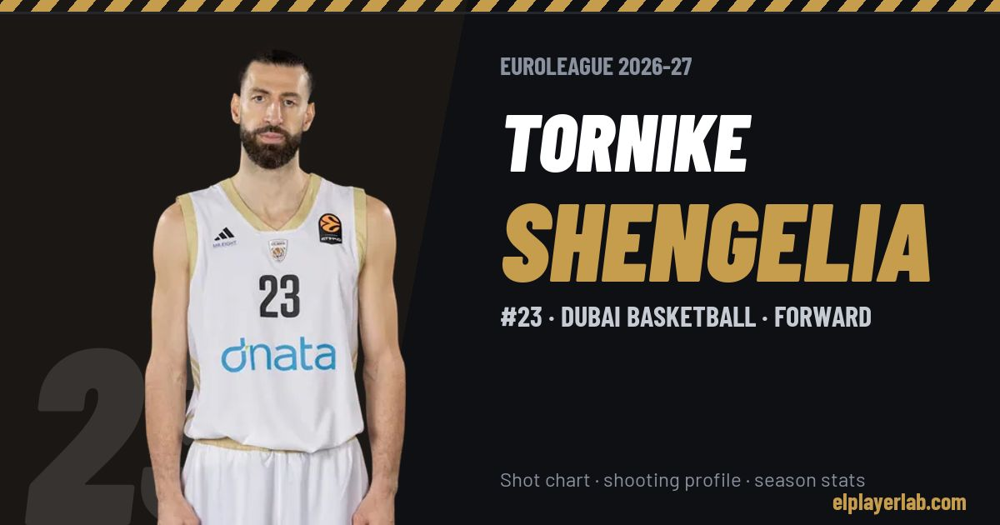

Dubai Basketball · Euroleague 2026-27
Tornike Shengelia
#23 · Forward · Dubai Basketball · 2026-27 · 2 games · 4.5 pts · 5.0 reb · 0.5 ast a game

- Number
- 23
- Position
- Forward
- Height
- 207 cm
- Weight
- 102 kg
- Born
- 1991-10-05
- Country
- Georgia
Career
- Dubai 2026-2027
- FC Barcelona 2025-2026
- Virtus Bologna 2022-2025
- CSKA Moscow 2020-2022
- Baskonia 2014-2020
- Chicago Bulls (NBA) 2013-2014
- Springfield Armor (loan) 2012-2014
- Brooklyn Nets (NBA) 2012-2013
- Verviers-Pepinster (loan) 2010-2011
- Spirou Charleroi 2010-2012
- Valencia 2008-2010
Euroleague Player Lab: shot charts, shooting profiles and season stats for every player, rebuilt after every game.